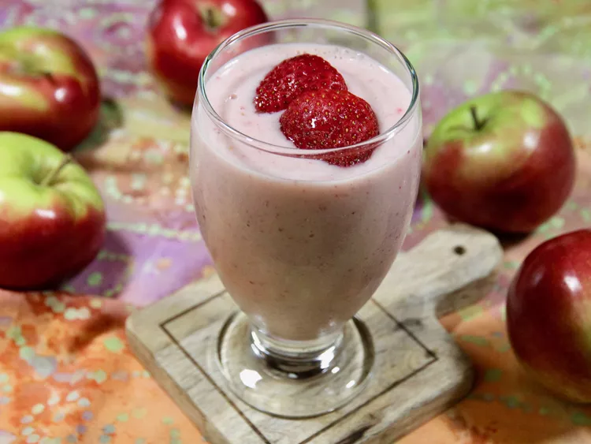

Apple, Strawberry, and Banana Smoothie

A Nutritious Drink
Start your day off right with this quick and nutritious apple smoothie, ready in minutes. This breakfast smoothie has a nice combination of fruit and is slightly sweet, creamy, and satisfying.
Ingredients
- 3/4 cup vanilla almond milk
- 1 apple - peeled, cored, and cubed
- 1 cup halved frozen strawberries
- 1 frozen banana, peeled and cubed
- 1/4 cup vanilla Greek yogurt
Directions
- Place almond milk, apple, strawberries, banana, and yogurt in a blender, being sure the milk goes in first. Process until smooth, occasionally scraping down the sides of the blender with a rubber spatula, if necessary.
- Pour into serving glasses and serve immediately.